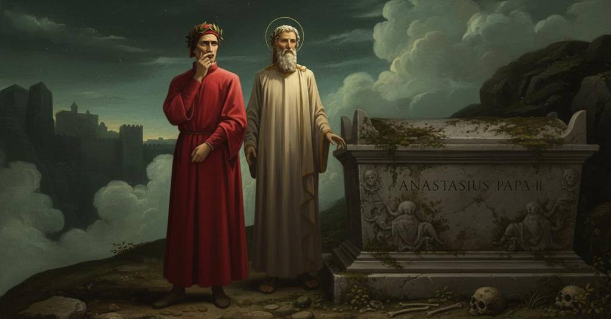

Inferno — Canto 11

Riassunto Summary 要約
Mentre si fermano per abituarsi al fetore del cerchio successivo, Virgilio spiega a Dante l'ordinamento morale del basso Inferno, distinguendo i peccati di malizia (violenza e frode) da quelli di incontinenza puniti nei cerchi superiori.
While they pause to get used to the stench of the next circle, Virgil explains to Dante the moral structure of lower Hell, distinguishing the sins of malice (violence and fraud) from those of incontinence punished in the upper circles.
次の圏の悪臭に慣れるために立ち止まる間、ウェルギリウスはダンテに下層地獄の道徳的構造を説明し、悪意の罪（暴力と欺瞞）を上層の圏で罰せられる無節制の罪と区別する。
Segmento 1 1–15
Giunti sull'orlo di un'alta ripa che dà sul cerchio successivo, Dante e Virgilio sono sopraffatti da un puzzo terribile che sale dall'abisso. Si rifugiano dietro il grande sepolcro di papa Anastasio, che secondo un'iscrizione fu sviato da Fotino. Virgilio spiega che devono fermarsi perché i loro sensi si abituino al fetore. Per non perdere tempo, Dante chiede un compenso, e Virgilio risponde che sta già pensando a come impiegare l'attesa.
Arriving at the edge of a high cliff overlooking the next circle, Dante and Virgil are overcome by a terrible stench rising from the abyss. They take refuge behind the large tomb of Pope Anastasius who, according to an inscription, was led astray by Photinus. Virgil explains they must pause for their senses to get used to the foul smell. So that the time is not wasted, Dante asks for some compensation, and Virgil replies that he is already thinking of how to use the wait.
次の圏を見下ろす高い崖の縁に着くと、ダンテとウェルギリウスは深淵から立ち上るひどい悪臭に圧倒される。墓碑銘によればフォティヌスによって正道から踏み外されたという教皇アナスタシウスの大きな墓の後ろに、二人は避難する。ウェルギリウスは、感覚が悪臭に慣れるために立ち止まらなければならないと説明する。時間を無駄にしないよう、ダンテはその埋め合わせを求め、ウェルギリウスはすでに待ち時間の使い方を考えていると答える。
Segmento 2 16–66
Virgilio spiega che dentro le mura di Dite vi sono tre cerchi che puniscono la malizia. Ogni atto di malizia è un'ingiuria compiuta con la violenza o con la frode. Poiché la frode è un male proprio dell'uomo, dispiace di più a Dio, e i fraudolenti sono puniti più in basso. Il primo cerchio è per i violenti, diviso in tre gironi a seconda della vittima: il prossimo (omicidi, predoni), sé stessi (suicidi, scialacquatori) e Dio (bestemmiatori, sodomiti, usurai). La frode si divide a sua volta in due tipi: quella contro chi non ha una fiducia speciale, che rompe solo il legame naturale d'amore ed è punita nel secondo cerchio (ipocriti, ladri), e quella contro chi si fida, che rompe anche un legame speciale ed è la più grave, punita nel cerchio più basso dove si trovano i traditori.
Virgil explains that within the walls of Dis there are three circles that punish malice. Every act of malice is an injury committed through violence or fraud. Because fraud is an evil peculiar to man, it is more displeasing to God, and the fraudulent are punished lower down. The first circle is for the violent, divided into three rings according to the victim: one's neighbor (murderers, plunderers), oneself (suicides, squanderers), and God (blasphemers, sodomites, usurers). Fraud, in turn, is divided into two types: that against someone who lacks special trust, which breaks only the natural bond of love and is punished in the second circle (hypocrites, thieves), and that against one who trusts, which also breaks a special bond and is the most serious, punished in the lowest circle where traitors are found.
ウェルギリウスは、ディーテの都の城壁内には悪意を罰する三つの圏があると説明する。あらゆる悪意の行為は、暴力か欺瞞によって行われる不正である。欺瞞は人間に特有の悪であるため、神をより不快にさせ、欺瞞を働いた者たちはより下層で罰せられる。第一の圏は暴力の罪を犯した者のためで、暴力の対象に応じて三つの環に分かれている。すなわち、隣人（人殺し、略奪者）、自己（自殺者、放蕩者）、そして神（冒涜者、男色家、高利貸し）に対してである。欺瞞はさらに二種類に分けられる。一つは特別な信頼を寄せない者に対するもので、これは自然な愛の絆のみを断ち切り、第二の圏（偽善者、盗人）で罰せられる。もう一つは信頼する者に対するもので、これは特別な絆をも断ち切る最も重い罪であり、裏切り者がいる最下層の圏で罰せられる。
Segmento 3 67–90
Il narratore chiede a Virgilio perché i peccatori dei cerchi superiori (iracondi, lussuriosi, golosi, avari) siano puniti fuori dalla città di Dite. Virgilio lo rimprovera per aver dimenticato l'Etica di Aristotele, la quale distingue le tre disposizioni invise al cielo: incontinenza, malizia e la "matta bestialitade". Poiché l'incontinenza offende meno Dio, spiega, questi peccatori sono tenuti separati dai più malvagi all'interno della città e la vendetta divina li punisce in modo meno severo.
The narrator asks Virgil why the sinners of the upper circles (the wrathful, lustful, gluttonous, avaricious) are punished outside the city of Dis. Virgil rebukes him for having forgotten Aristotle's Ethics, which distinguishes the three dispositions unwelcome in heaven: incontinence, malice, and "mad bestiality". Since incontinence offends God less, he explains, these sinners are kept separate from the more wicked ones inside the city and divine vengeance punishes them less severely.
語り手は、なぜ上層の圏の罪人たち（憤怒、色欲、貪食、貪欲の罪を犯した者）がディーテの都の外で罰せられているのかとウェルギリウスに尋ねる。ウェルギリウスは、アリストテレスの『倫理学』を忘れたことを叱責する。その書では天が望まない三つの気質、すなわち無節制、悪意、そして「狂気の獣性」が区別されている。無節制は他の罪よりも神を怒らせることが少ないため、これらの罪人たちは都の内部にいるより邪悪な者たちから分けられ、神の復讐もそれほど厳しく彼らを罰することはないのだと彼は説明する。
Segmento 4 91–115
Il narratore chiede a Virgilio di spiegare perché l'usura offenda la bontà divina. Virgilio chiarisce, citando Aristotele e la Genesi, che l'umanità deve vivere secondo la natura (figlia di Dio) e l'arte, ovvero il lavoro (nipote di Dio). L'usuriere disprezza questo ordine perché non basa la sua vita sul lavoro ma su altro, violando sia la natura che la sua seguace. Conclusa la spiegazione, Virgilio indica la tarda ora osservando le stelle e sprona il narratore a procedere verso il dirupo che porta al cerchio successivo.
The narrator asks Virgil to explain why usury offends divine goodness. Virgil clarifies, citing Aristotle and Genesis, that humanity must live according to nature (God's daughter) and art, that is, labor (God's granddaughter). The usurer scorns this order because he bases his life not on labor but on something else, thus violating both nature and its follower. Having concluded the explanation, Virgil indicates the late hour by observing the stars and urges the narrator to proceed toward the cliff that leads to the next circle.
語り手は、なぜ高利貸しが神の善意を損なうのか説明してほしいとウェルギリウスに頼む。ウェルギリウスはアリストテレスと『創世記』を引用し、人類は自然（神の娘）と、人間の術すなわち労働（神の孫娘）に従って生きるべきだと明らかにする。高利貸しは、労働ではなく他のものに人生の基盤を置くことでこの秩序を軽んじ、自然とその追随者である術の両方を侵害するのである。説明を終えると、ウェルギリウスは星を観察して夜が更けたことを示し、次の圏へと続く崖に向かって進むよう語り手を促す。